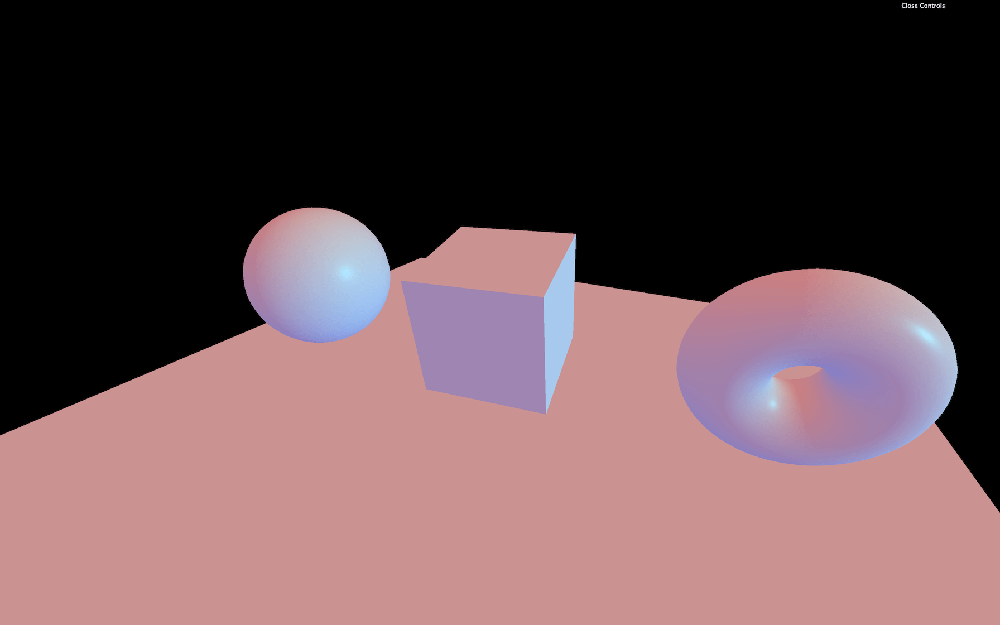

Introduction
As we saw in the previous lesson, adding lights is as simple as adding meshes. You instantiate a light using the proper class, and you add it to the scene.
There are multiple types of lights, and we already discovered the AmbientLight and the PointLight.
In this lesson, we will see all the different classes in detail and how to use them.
Setup
A scene is already set up in the starter (complete with a sphere, a cube, a torus, and a plane as the floor), but feel free to try this yourself if you want to practice.
Because we are going to use lights, we must use a material that reacts to lights. We could have used MeshLambertMaterial, MeshPhongMaterial or MeshToonMaterial, but instead we will use the MeshStandardMaterial because it's the most realistic one as we saw in the previous lesson. We also reduced the roughness of the material to 0.4 to see the reflections of the lights.
Once the starter is working remove the AmbientLight and the PointLight to start from scratch. You should get a black render with nothing visible in it.
AmbientLight
The AmbientLight applies omnidirectional lighting on all geometries of the scene. The first parameter is the color and the second parameter is the intensity. As for the materials, you can set the properties directly when instantiating or you can change them after:
And like we did for the materials, you can add the properties to the Debug UI. We won't do that in the rest of the lesson but feel free to add tweaks if you want to ease the testing:
If all you have is an AmbientLight you'll have the same effect as for a MeshBasicMaterial because all faces of the geometries will be lit equally.
In real life, when you light up an object, the sides of the objects at the opposite of the light won't be totally black because light bounces on the walls and other objects. Light bouncing is not supported in Three.js for performance reasons, but you can use a dim AmbientLight to fake this light bounce.
DirectionalLight
The DirectionalLight will have a sun-like effect as if the sun rays were traveling in parallel. The first parameter is the color and the second parameter is the intensity:
By default, the light will seems to come from above. To change that, you must move the whole light by using the position property like if it were a normal object.
The distance of the light doesn't matter for now. The rays come from an infinite space and travel in parallel to the infinite opposite.
HemisphereLight
The HemisphereLight is similar to the AmbientLight but with a different color from the sky than the color coming from the ground. Faces facing the sky will be lit by one color while another color will lit faces facing the ground.
The first parameter is the color corresponding to the sky color, the second parameter is the groundColor and the third parameter is the intensity:

PointLight
The PointLight is almost like a lighter. The light source is infinitely small, and the light spreads uniformly in every direction. The first parameter is the color and the second parameter is the intensity:
We can move it like any object:
By default, the light intensity doesn't fade. But you can control that fade distance and how fast it is fading using the distance and decay properties. You can set those in the parameters of the class as the third and fourth parameters, or in the properties of the instance:
RectAreaLight
The RectAreaLight works like the big rectangle lights you can see on the photoshoot set. It's a mix between a directional light and a diffuse light. The first parameter is the color, the second parameter is the intensity, the third parameter is width of the rectangle, and the fourth parameter is its height:
The RectAreaLight only works with MeshStandardMaterial and MeshPhysicalMaterial.
You can then move the light and rotate it. To ease the rotation, you can use the lookAt(...) method that we saw in a previous lesson:
A Vector3 without any parameter will have its x, y, and z to 0 (the center of the scene).
SpotLight
The SpotLight works like a flashlight. It's a cone of light starting at a point and oriented in a direction. Here the list of its parameters:
color: the colorintensity: the strengthdistance: the distance at which the intensity drops to0angle: how large is the beampenumbra: how diffused is the contour of the beamdecay: how fast the light dims
Rotating our SpotLight is a little harder. The instance has a property named target, which is an Object3D. The SpotLight is always looking at that target object. But if you try to change its position, the SpotLight won't budge:
That is due to our target not being in the scene. Simply add the target to the scene, and it should work:
Performance
Lights are great and can be realistic if well used. The problem is that lights can cost a lot when it comes to performance. The GPU will have to do many calculations like the distance from the face to the light, how much that face is facing the light, if the face is in the spot light cone, etc.
Try to add as few lights as possible and try to use the lights that cost less.
Minimal cost:
- AmbientLight
- HemisphereLight
Moderate cost:
- DirectionalLight
- PointLight
High cost:
- SpotLight
- RectAreaLight
Baking
A good technique for lighting is called baking. The idea is that you bake the light into the texture. This can be done in a 3D software. Unfortunately, you won't be able to move the lights, because there are none and you'll probably need a lot of textures.
A good example is Three.js Journey home page

Helpers
Positioning and orienting the lights is hard. To assist us, we can use helpers. Only the following helpers are supported:
To use them, simply instantiate those classes. Use the corresponding light as a parameter, and add them to the scene. The second parameter enables you to change the helper's size:
For the SpotLightHelper, there is no size parameter. Also, after moving the target, you need to call the update(...) method but on the next frame:
The RectAreaLightHelper is even harder to use. Right now, the class isn't part of the THREE variable. You must import it from the examples dependencies as we did with OrbitControls:
Then you can use it: